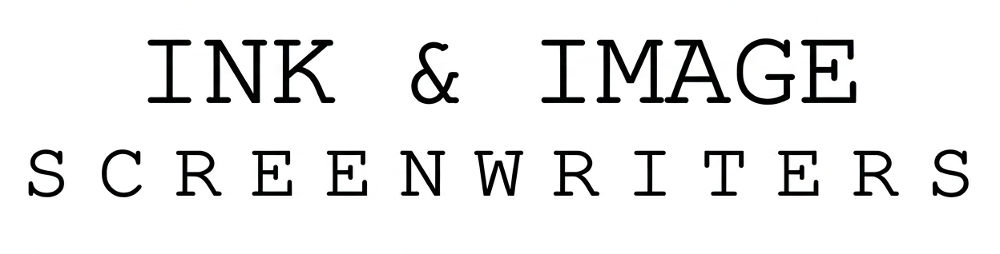

Great ideas are everywhere. Great execution is rare. Powerful stories don't happen by accident; they are engineered with precision, structure, and vision.
At Ink & Image Screenwriters, we transform ideas into powerful narratives ready for screen, stage, business, or publication. From Ink to Image.
One Roof. Infinite Stories.
Ink & Image Screenwriters is a full-scale narrative development studio dedicated to storytelling across cinema, streaming platforms, global business communication, and publication.
We combine creative instinct with narrative science, ensuring every story has strong structure, compelling characters, and emotional impact.
Our work bridges the gap between raw ideas and professional screenplays, creative storytelling and structured narrative design, and global cinematic standards with regional cultural authenticity.
To build a global storytelling hub where ideas from any culture can evolve into powerful cinematic narratives. We believe strong stories are the foundation of successful cinema.
Our services support projects at every stage—from concept development to final script polish—ensuring clarity, engagement, and production readiness.
A Structured Approach to Powerful Storytelling
Concept exploration, tone, and audience alignment.
Story structure, character arcs, and screenplay development.
Refinement of dialogue, pacing, and emotional depth.
Production-ready screenplay with pitch materials.
Your Gateway to the Karnataka Market
Releasing a film in Karnataka requires more than translation—it requires authentic language and cultural understanding.
• Dialogue Adaptation (Transcreation)
• Lip-Sync Accuracy
• Censor-Ready Scripts (CBFC)
We actively develop original narrative concepts across formats:
• Feature Films – character-driven drama, psychological thrillers
• Web Series – OTT multi-season storytelling
• Documentaries – real-world narratives
Let’s Write the Future
Have a story worth telling? Let’s turn it into something unforgettable.
INK & IMAGE SCREENWRITERS
R. Chandrashekar Prasad
Writer & Director
Email: chandrashekarprasad.csp@gmail.com
Phone: +91 9964593999
Website: www.moviecuts.in/ink&image